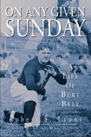

<body bgcolor="#FFFFFF" text="#000000" link="#0000FF" vlink="#CC0000" alink="#CC0000"><center><hr width="350" size="1" align="center" noshade>The first biography ever written about the man who some considered the greatest commissioner in the history of professional sports<hr width="350" size="1" align="center" noshade><p><a href="https://cdcshoppingcart.uchicago.edu/Cart/ChicagoBook.aspx?ISBN=9781592137312&&PRESS=temple" target="_top">Buy this book!</a> | <a href="https://cdcshoppingcart.uchicago.edu/Cart/Cart.aspx?PRESS=temple" target="_top">View Cart</a> | <a href="https://cdcshoppingcart.uchicago.edu/Cart/Cart.aspx?PRESS=temple" target="_top">Check Out</a></p><p></p></center><!--none//--><h1>On Any Given Sunday</h1>
<H2>A Life of Bert Bell</H2>
<H2>Foreword by Don Shula</H2>
<h3>Robert S. Lyons</h3>
<P>cloth 1-59213-731-8 $39.50, Nov 09, <FONT COLOR=#990033>Available</FONT>
<BR> 352 pp
6x9
20&nbsp;halftones
</P><BLOCKQUOTE><I>"It’s hard to believe that it’s been fifty years since Bert Bell’s death and that no one has ever chronicled the life of this remarkable man. Fortunately, Bob Lyons has finally filled the void with a fascinating, thoroughly researched biography that not only details the accomplishments of one of the finest commissioners in the history of professional sports but also offers a unique glimpse into a long-forgotten era of the National Football League."</i> <br><b>&#151From the Foreword by Don Shula</b></I></BLOCKQUOTE>
<p>Bert Bell, a native of Philadelphia, has been called the most powerful executive figure in the history of professional football. He was responsible for helping to transform the game from a circus sideshow into what has become the most popular spectator sport in America. In the first biography of this important sports figure, historian Robert Lyons recounts the remarkable story of how de Benneville "Bert" Bell rejected the gentility of a high society lifestyle in favor of the tougher gridiron and rose to become the founder of the Philadelphia Eagles and Commissioner of the National Football League.
</p><p>
Bell, who arguably saved the league from bankruptcy by conceiving the idea for the annual player draft, later made the historic decision to introduce "sudden death" overtime—a move that propelled professional football into the national consciousness. He coined the phrase "on any given Sunday" and negotiated the league’s first national TV contract. Lyons describes in fascinating detail Bell’s relationships with leading figures ranging from such Philadelphia icons as Walter Annenberg and John B. Kelly to national celebrities and U.S. Presidents. He also provides insight into Bell’s colorful personal life—including his hell-raising early years and his secret marriage to Frances Upton, a golden name in show business.
</p><p>
<i>On Any Given Sunday</i> is being published on the fiftieth anniversary of Bell’s death.</p>
<BR>&nbsp;<h2>Excerpt</h2><P>Excerpt available at <a href="http://www.temple.edu/tempress">www.temple.edu/tempress</a></p>
<BR>&nbsp;<h2>Reviews</h2>
<p><i>"I know the book well. It's a terrific book."</i><br>&#151<b> NFL Commissioner Roger Goodell</b>, as heard on <i>The Sal Paolantonio Show</i> (ESPN)
<p><i>"Bert Bell devoted his life to pro football. As the NFL’s first great commissioner, he shaped his time and the times to come. The rest walk in his footsteps. This book explains why."</i><br>&#151<b>Steve Sabol</b>, President, NFL Films
<p><i>"Before Bert Bell, the NFL operated out of a closet, almost. Most of what you associate with pro football today began with Bert Bell."</i><br>&#151<b>Dick Vermeil</b>
<p><i>"Robert S. Lyons' flavorful biography captures the blustery and paternalistic Bell, portraying him as a man who worked relentlessly to keep the NFL alive and push it to thrive....[T]he book is worth reading. One has to appreciate the long string of anecdotes and colorful details Lyons has dug up. Who knew, for instance, that Bell would calm tempers at owners' meetings by taking out his false teeth and putting them in his water glass? More important, no book has detailed Bell's contributions to the NFL so thoroughly." </i>
<br>&#151<b><i>Philadelphia Inquirer</i></b>
<p><i>"Lyons lays out chapter and verse the many accomplishments by Bell that helped advance professional football from questionable status to its dominant position in American sports.... While the main thrust of Lyons' book is to show the crucial role Bell played in the advancement of professional football, sidelights on his personal life are also of interest.... A good read." </i><br> &#151<b><i>Catholic Standard & Times</i></b>
<p><i>"Bell was a fascinating personality whose life is vividly brought to life in Lyons’ book...Lyons captures eloquently Bell’s strengths and quirks in a book that is really good history, fascinating sports and revealing biography."</i><br>&#151<b><i>The Chestnut Hill Local</i></b>
<p><i>“Not only did Bell (whose impact is chronicled in a brilliant book by Robert Lyons, titled, </i>On Any Given Sunday<i>), propose the NFL draft to help inspire competitive balance, he was also the schedule-maker who used dominoes to craft a slate that aimed to purposely keep the races tight until late in the season”</i><br>&#151<b><i>USA Today</i></b>
<p><i>"[Lyons] combines print sources, minutes from league meetings, and interviews with Bert Bell's sons to produce a solid study of this key figure in American sports history.... [His] admirable collection of anecdotes provides a good starting point for anyone interested in the NFL's middle period.... In presenting a thoroughly researched life of Bert Bel [Lyons] has thrown light on one of the crucial moments in television, the NFL, and American sport." </i><br> &#151<b><i>Journal of Sport History</i></b>
<BR>&nbsp;<P><p>&nbsp;&nbsp;<font color="#3152A5">Also available in e-book</font></p></P><BR>&nbsp;<br>
<h2>Contents</h2><P>
<p>Foreword <i>by Don Shula</i>
<br>Acknowledgments
<br>Prologue
<br>1. The Early Years
<br>2. The Quarterback of the Quakers
<br>3. A War Hero Tastes the French Nightlife
<br>4. Back to Penn as Captain of the Quakers
<br>5. Bert Bell’s Coaching Career Begins
<br>6. The Roaring Twenties— Off the Field
<br>7. Frances Upton: One of America’s Brightest Stars
<br>8. The Yellow Jackets Become the Eagles
<br>9. The Eagles Struggle under Bell and Wray
<br>10. The Player Draft Comes in 1936
<br>11. Additional Shock Waves from 1936
<br>12. The Struggle to Survive: 1937 to 1939
<br>13. Bert Bell and Art Rooney Get Together
<br>14. Bert Bell Ends Up in Pittsburgh
<br>15. Bracing for World War II
<br>16. The Steagles
<br>17. The Card- Pitts
<br>18. The New Commissioner
<br>19. Mysterious Negotiations with the AAFC
<br>20. A Gambling Scandal Nipped in the Bud
<br>21. Blizzards, Gamblers, and a Rebellious Club Owner
<br>22. A Dispute with Walter Annenberg and a Truce with the AAFC
<br>23. Buffalo, Dominoes, and Television
<br>24. Finally a Home of Their Own
<br>25. The Dream Game Turns into a Shocker
<br>26. Problems with the Federal Government
<br>27. “Listen, Sonny, Just Sign the Contract!”
<br>28. Baltimore Rises from the Ashes
<br>29. More Warfare and the Sermon on the Mount
<br>30. Flare-Ups, Pile-Ups, and a Move to Oust the Commissioner
<br>31. The Commissioner’s Working Style
<br>32. At Home in Narberth
<br>33. The NFL Welcomes Bubble Gum Cards and CBS-TV
<br>34. “You Can’t Quit Now, Pete Rozelle!”
<br>35. The Players Finally Get a Unionr
<br>36. The “Hands- On” Commissioner
<br>37. “On Any Given Sunday . . .”
<br>38. “Sudden Death” Finally Arrives
<br>39. Anxiety over the AFC, the Pension Plan, and the Pro Bowl
<br>40. A Poetic Ending at Franklin Field
<br>Epilogue
<br>Sources
<br>Index
</P><BR>&nbsp;<H2>About the Author(s)</H2>
<table><tr><td valign="top"><img src="/tempress/authors/1946_au1.gif" height="90" width="75"></td><td width="100%" valign="middle"><p><b>Robert S. Lyons</b> (1939-2013) covered professional and college sports for the Associated Press for more than 35 years, and has contributed articles to numerous national publications. He is the author of <i><a href="1622_reg.html" target="_top">Palestra Pandemonium: A History of the Big Five</a></i>, and co-author (with Ray Didinger) of <i><a href="1830_reg.html" target="_top">The Eagles Encyclopedia</a></i> (both Temple). He is the former director of the La Salle University News Bureau, editor of the university's alumni magazine, and an instructor in the school's Communications Department.</P></td></tr></table>
<BR><H2>Subject Categories</H2>
<p><A HREF="/tempress/sports.html" TARGET="_top">Sports</a>
<BR><A HREF="/tempress/biography.html" TARGET="_top">Biography/Memoir/Autobiography</a>
<BR><A HREF="/tempress/philly.html" TARGET="_top">Philadelphia Region</a>
</p>
<p align="center"><a href="https://cdcshoppingcart.uchicago.edu/Cart/ChicagoBook.aspx?ISBN=9781592137312&&PRESS=temple" target="_top">Buy this book!</a> | <a href="https://cdcshoppingcart.uchicago.edu/Cart/Cart.aspx?PRESS=temple" target="_top">View Cart</a> | <a href="https://cdcshoppingcart.uchicago.edu/Cart/Cart.aspx?PRESS=temple" target="_top">Check Out</a></p><p><font face="Arial" size="1"><a href="copyright.html" onMouseOver="window.status='Web Copyright Policy';return true;" onMouseOut="window.status=''" title="Web Copyright Policy">&copy;</a> 2015 <a href="http://www.temple.edu" target="new" onMouseOver="window.status='Link to Temple University home page';return true;" onMouseOut="window.status=''" title="Link to Temple University home page">Temple University</a>. All Rights Reserved. http://www.temple.edu/tempress/titles/1946_reg.html</font></p>